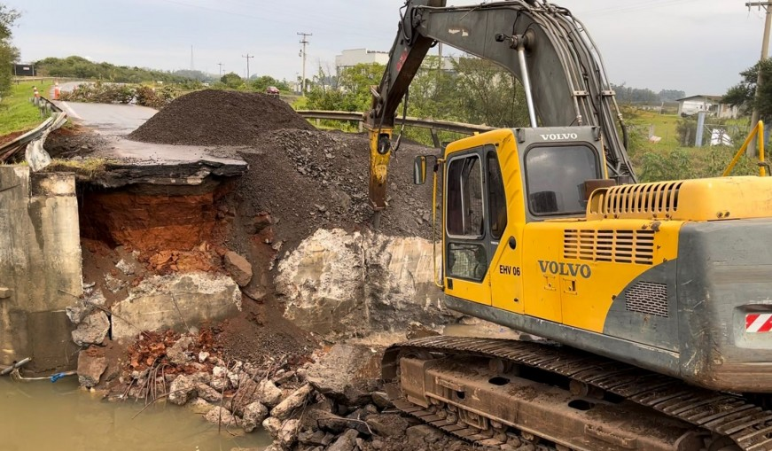

o
Cidades do Rio Grande do Sul iniciam reconstrução após inundações
As cidades do Rio Grande do Sul que foram afetadas pelas inundações nos últimos dias iniciaram a reconstrução.
Em Taquara, as equipes de resgate trabalham para retirar os escombros das casas e empresas que foram destruídas. O governo do estado anunciou que vai investir R$ 100 milhões na reconstrução da cidade.
Em Nova Hartz, as equipes de socorro continuam procurando por desaparecidos.
As inundações no Rio Grande do Sul são um exemplo do impacto das mudanças climáticas no Brasil. Os eventos climáticos extremos estão se tornando cada vez mais frequentes e intensos, causando prejuízos materiais e humanos.